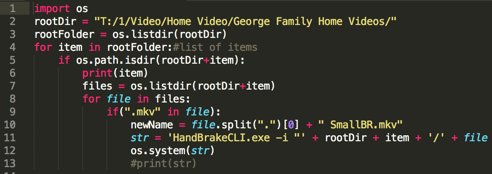

Why Python?
Python is a great scripting language
It can be much easier to write simple or complex scripts in python than other languages. For example, a lot of the overhead necessary to just get a java program up and running simply isn't necessary. Python is even more efficient than using scripting languages built-in to the operating system. Nothing against powershell, but after having learned powershell in a class and then spending 4 hours trying to write a script that used HandBrakeCLI I gave up and switched to python. After about an hour writing (and less than an hours worth of instruction on python ever) I was done. And the solution worked flawlessly.
Open source means open source
One of the best features of python is that it's completely open source. But so are most programming languages. What makes python unique however, is that because it is also an interpreter language, source files are not translated into machine code. This means that libraries and other .py files are human readable in their finalized states. In most other programming languages, libraries and frameworks are often open source, but the only visibility you get is the documentation and any intellisense your IDE gives you. If you've ever wanted to see under-the-hood examples from expert programmers all you have to do is download the library and the original source is all yours.
Object Oriented and fully packed with libraries and frameworks
Although Python is a great scripting language, chances are it would not have been used enough to become very popular unless it has also been able to support object-oriented programming. Even more impressive are the libraries and frameworks (like django) to help you transition from someone who "writes code" to someone who develops something awesome.